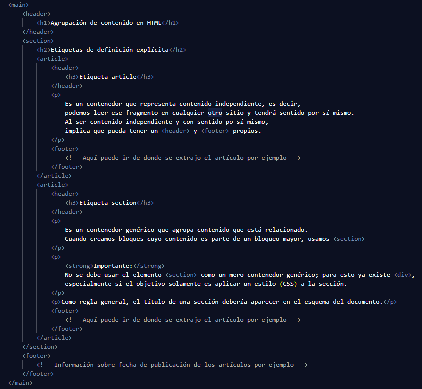
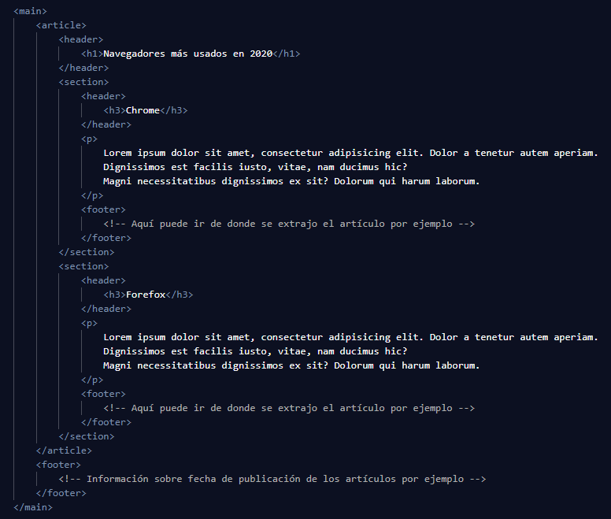

Es un contenedor que representa contenido independiente, es decir, podemos leer ese fragmento en cualquier otro sitio y tendrá sentido por sí mismo. Al ser contenido independiente y con sentido por sí mismo, implica que pueda tener un header y un footer propios.
Section
Es un contenedor genérico que agrupa contenido que está relacionado. Cuando creamos bloques cuyo contenido es parte de un bloqueo mayor, usamos section
Importante:
No se debe usar el elemento section como un mero contenedor genérico, para esto ya existe div, especialmente si el objetivo solamente es aplicar un estilo (CSS) a la sección.
Como regla general, el título de una sección debería aparecer en el esquema del documento.
¿Cuál es la forma correcta de anidar etiquetas section y article?
La respuesta es que un article puede contener elementos section y un section puede contener elementos article.
Ejemplo de una etiqueta section anidando etiquetas article

Como puedes ver, cada artículo tiene sentido por sí solo, y si estuviera en cualquier otro sitio, seguiría teniendo sentido. La etiqueta section los anida formando un bloque mayor que en este caso es "Etiquetas de definición explícita"
Ejemplo de una etiqueta article anidando etiquetas section

Aquí cada sección es un navegador distinto pero los dos pertencen al mismo artículo, en este caso "Navegadores más usados en 2020"